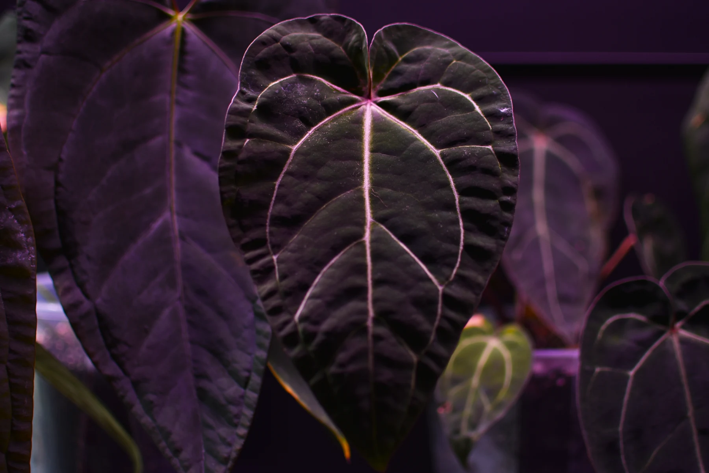
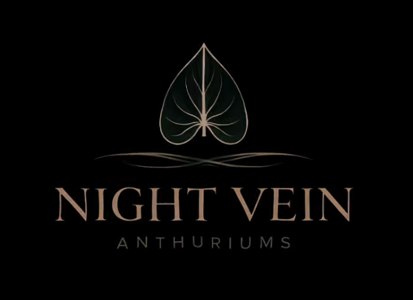
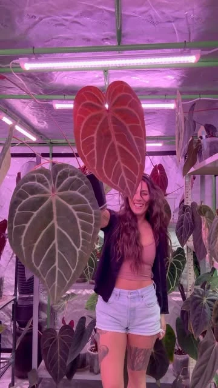

RARE FOLIAGE · KANSAS GROWN
A little darker.
A little wilder.
A love letter to velvet leaves, luminous veins,
and the quiet joy of growing something extraordinary.

ROOTED IN CURIOSITY
For the love
of the unusual.
Some leaves ask you to look a little closer. A new flush of copper. A nearly black heart. A network of veins that catches the light just so.
Night Vein is Sharon Mitchell’s growing world of rare and specialty anthuriums in Kansas, with monsteras sharing in the greenery. A personal collection, a creative practice, and a place to keep discovering.
THE LIVING COLLECTION
Every leaf, its own world.
Velvet textures. Sculptural forms.
Beautifully unexpected details.

FIELD NOTES / 001THE GROW JOURNAL
A small room.
A whole other climate.
Behind every leaf is a space made with care. Step inside the grow room Sharon created: reflective walls, a green tubular frame, and an environment built around the plants.
KEEP GROWING WITH US
There’s always
a new leaf unfolding.
@nightveinanthuriums ↗New growth, collection moments, and life in the grow room.